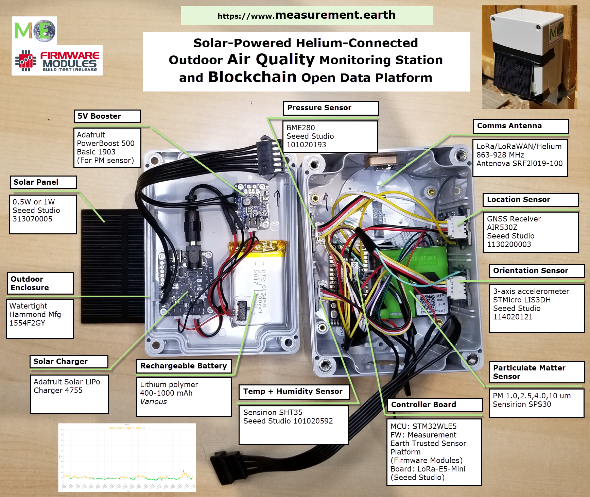

My Fully Autonomous Solar-Powered LoRaWAN/Helium Particulate Matter Air Quality Weather Station is a low-maintenance and unique way to capture environmental data.
It measures particulate matter 1.0, 2.5, 4.0, 10.0 μg/m
3 along with temperature, humidity, pressure, battery level,
orientation (accelerometer x,y,z) and location (GPS).
This station has several important differentiators from other weather stations:
-
Fully weatherproof while allowing air to enter unit for responsive and sensitive particulate matter measurements.
-
Very sensitive to smoke at any concentration from any source.
-
Makes measurements every 15 minutes.
-
Never needs to be plugged in or batteries replaced. Solar powered!
-
Can be placed anywhere there is suitable Helium network (and sun) coverage.
-
Can operate for multiple days without sun with built-in Li-Ion battery. Will hibernate when there is no sun (i.e over winter in high latitude areas)
-
The station signs its own sensor measurements into blockchain transactions on-board with a unique key securely stored inside the sensor.
-
Supports Antelope.io blockchains.
-
Designed for the Measurement {Earth} platform on the Telos blockchain.
Here is how it is constructed. It uses off-the-shelf components combined with my firmware development company's (Firmware Modules) unique IoT operating system.
